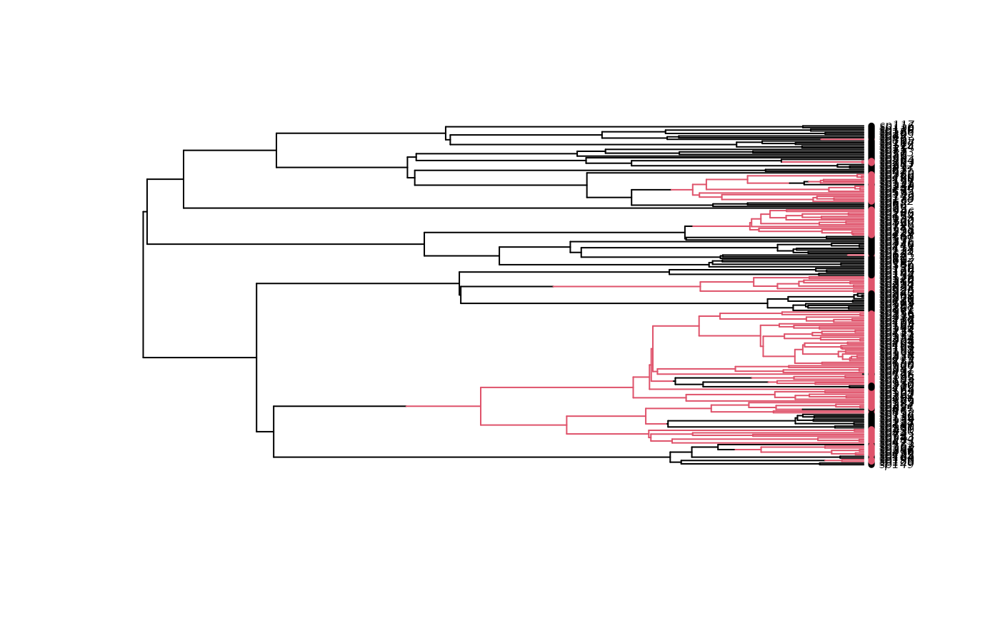

find.mle.RdFind the maximum likelihood point of a model by nonlinear
optimisation. find.mle is generic, and allows different
default behaviour for different likelihood functions.
A likelihood function. This is assumed to return the log likelihood (see Details). The function must take a vector of parameters as the first argument.
Initial starting point for the optimisation.
Method to use for optimisation. May be one of "optim", "subplex", "nlminb", "nlm" (partial unambigious string is allowed).
For find.mle, additional arguments passed through to
the methods, optimisation routines, or to the likelihood function
func - see Details. For anova, this is one or more
models to compare against the model object (either submodels
or supermodels or the test is meaningless).
A fitted model, returned by find.mle.
When returning the coefficients for a constrained model, should be coefficients for the underlying constrained model be returned?
When returning the coefficients for a constrained model, should dummy “extra” parameters be returned as well?
Should anova treat the models as a series of
increasing complexity? Currently this is a little overzealous in
checking and will refuse to work if the likelihood values are not
strictly increasing.
find.mle starts a search for the maximum likelihood (ML)
parameters from a starting point x.init. x.init should
be the correct length for func, so that func(x.init)
returns a valid likelihood. However, if func is a constrained
function (via constrain) and x.init is the
correct length for the unconstrained function then an attempt will be
made to guess a valid starting point. This will often do poorly and a
warning will be given.
Different methods will be dispatched for different types of likelihood
functions. Currently all models in diversitree are supported
(bisse, geosse, mk2, mkn, bd, and
yule). With the exception of the Yule pure-birth process, these
methods just specify different default arguments for the underlying
optimisation routines (the Yule model has an analytical solution, and no
optimisation step is required). Generally, it will not be necessary
to specify the method argument to find.mle as a sensible
method is chosen during dispatch.
The ... argument may contain additional arguments for the
function func. This includes things like condition.surv
for conditioning on survival in BiSSE, birth-death, and Yule models.
Specify this as
find.mle(lik, x.init, condition.surv=TRUE)
(see the Examples).
Different method arguments take different arguments passed
through ... to control their behaviour:
method="optim": Uses R's optim function for the
optimisation. This allows access to a variety of general purpose
optimisation algorithms. The method within optim can be
chosen via the argument optim.method, which is set to
"L-BFGS-B" by default (box constrained quasi-Newton optimisation).
This should be suitable for most uses. See the method argument
of optim for other possibilities. If "L-BFGS-B"
is used, then upper and lower bounds may be specified by the arguments
lower and upper. The argument control can be
used to specify other control parameters for the algorithms - see
optim for details. Most of the optim algorithms
require finite values be returned at every evaluated point. This is
often not possible (extreme values of parameters or particular
combinations may have zero likelihood and therefore -Inf
log-likelihood). To get around this, the argument fail.value
can be used to specify a fallback value. By default this is set to
func(x.init) - 1000, which should work reasonably well for most
cases.
method="subplex": Uses the "subplex" algorithm (a variant of
the downhill simplex/Nelder-Mead algorithm that uses Nelder-Mead on a
sequence of subspaces). This algorithm generally requires more
evaluations than optim-based optimisation, but does not require
approximation of derivatives and seems to find the global optimum more
reliably (though often less precisely). Additional arguments are
control to control aspects of the search (see
subplex for details). The argument fail.value
can be used as in method="optim", but by default -Inf
will be used on failure to evaluate, which is generally appropriate.
method="nlminb": Uses the function nlminb for
optimisation, so that optimising a Mk2/Mkn likelihood function behaves
as similarly as possible to ape's ace function.
As for method="optim", lower and upper bounds on parameters may
be specified via lower and upper. fail.value can
be used to control behaviour on evaluation failure, but like
method="subplex", -Inf is used which should work in most
cases. Additional control parameters may be passed via control
- see link{nlminb} for details. This function is not generally
recommended for use.
method="nlm": Uses the function nlm for
optimisation, so that optimising a birth-death likelihood function
behaves as similarly as possible to ape's
birthdeath function. Takes the same additional
arguments as method="nlminb" (except that fail.value
behaves as for method="optim"). Like method="nlminb",
this is not recommended for general use.
code and logLik methods exist for fit.mle objects
so that parameters and log-likelihoods may be extracted. This also
allows use with AIC.
Simple model comparison by way of likelihood ratio tests can be
performed with anova. See Examples for usage.
The anova function carries out likelihood ratio tests.
There are a few possible configurations.
First, the first fit provided could be the focal fit, and all other fits are either special cases of it (every additional model is nested within the focal model) or generalisations of it (the focal model is nested within every additional model).
Second, the models could be sequential series of fits (if
sequential=TRUE), such that models (A, B, C, D) are to be
compared A vs. B, B vs. C, C vs. D. The models can either be strictly
increasing in parameters (A nested in B, B nested in C, ...) or
strictly decreasing in parameters (D nested in C, C nested in B, ...).
In both cases, nestedness is checked. First, the "class" of the
fitted object must match. Second, the argnames of the
likelihood function of a sub model must all appear in the
argnames of the parent model. There are some cases where this
second condition may not be satisfied and yet the comparison is valid
(e.g., comparing a time-varying model against a non time varying
model, and some make.quasse fits). We attempt to detect this
but it may fail on some valid comparisons and silently allow some
invalid comparisons.
A list of class fit.mle, with at least the components
par The estimated parameters.
lnLik The log likelihood at the ML point.
counts The number of function evaluations performed
during the search.
code Convergence code. See the documentation for the
underlying optimisation method for meaning, but "0" is usually good.
func The likelihood function used in the fit.
method The optimisation method used.
## Due to a change in sample() behaviour in newer R it is necessary to
## use an older algorithm to replicate the previous examples
if (getRversion() >= "3.6.0") {
RNGkind(sample.kind = "Rounding")
}
#> Warning: non-uniform 'Rounding' sampler used
pars <- c(0.1, 0.2, 0.03, 0.03, 0.01, 0.01)
set.seed(2)
phy <- tree.bisse(pars, max.t=60, x0=0)
## Here is the 203 species tree with the true character history coded.
## Red is state '1', which has twice the speciation rate of black (state
## '0').
h <- history.from.sim.discrete(phy, 0:1)
plot(h, phy, cex=.5, show.node.state=FALSE)

## Make a BiSSE likelihood function
lik <- make.bisse(phy, phy$tip.state)
lik(pars)
#> [1] -660.0223
## This takes ~30s to run, so is not enabled by default
if (FALSE) { # \dontrun{
## Fit the full six-parameter model
fit <- find.mle(lik, pars)
fit[1:2]
coef(fit) # Named vector of six parameters
logLik(fit) # -659.93
AIC(fit) # 1331.86
## find.mle works with constrained models (see \link{constrain}). Here
## the two speciation rates are constrained to be the same as each
## other.
lik.l <- constrain(lik, lambda0 ~ lambda1)
fit.l <- find.mle(lik.l, pars[-2])
logLik(fit.l) # 663.41
## Compare the models with \link{anova} - this shows that the more
## complicated model with two separate speciation rates fits
## significantly better than the simpler model with equal rates
## (p=0.008).
anova(fit, equal.lambda=fit.l)
## You can return the parameters for the full six parameter model from
## the fitted five parameter model - this makes a good starting point
## for a ML search.
coef(fit.l, full=TRUE)
} # }